Паспорт проекта · AI.Цех, поток 03
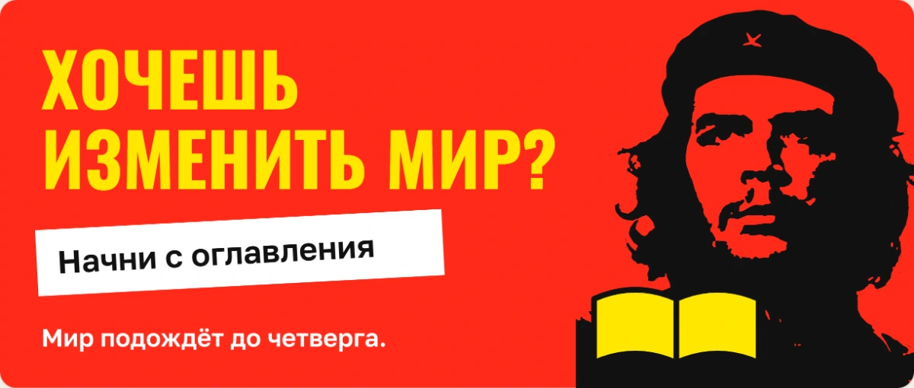
Клуб ведёт платформа, а не человек с таймером в руках
У клуба есть хранитель. Он встречает человека на первом входе и сам объясняет, при чём тут он.
¡Hola, compañero!
«Привет, товарищ! Я Че, хранитель клуба.
Почему клуб назван в мою честь? Я читал всю жизнь. Из-за астмы мама учила меня читать дома, потом я брал книги в горы и в джунгли и записывал каждую прочитанную.
Буду подсказывать, что где, и платить песо за главы.»
Текст живёт в приложении: это первое, что видит сотрудник, когда открывает клуб по ссылке приглашения. Дальше Че подсказывает по экранам и ведёт счёт прочитанного.
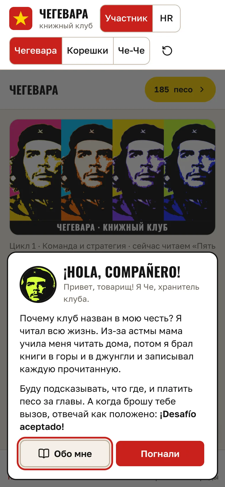
Первый вход в клуб
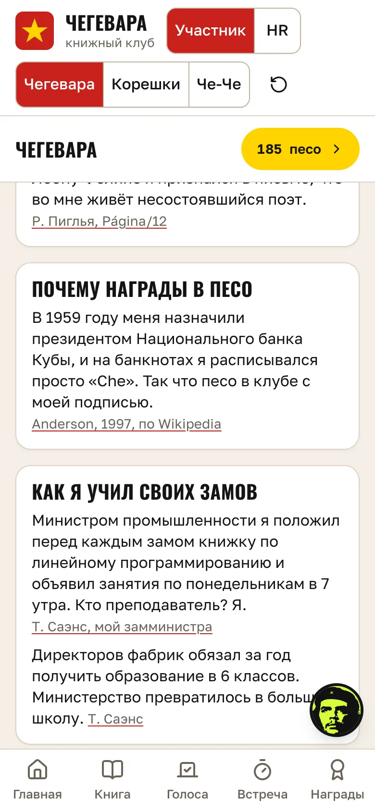
Факты: книги в горах и джунглях
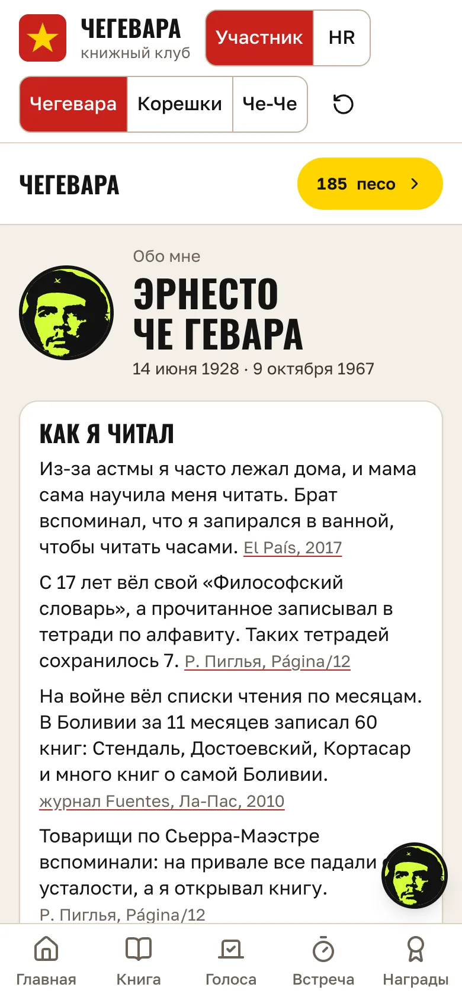
Обо мне: список прочитанного
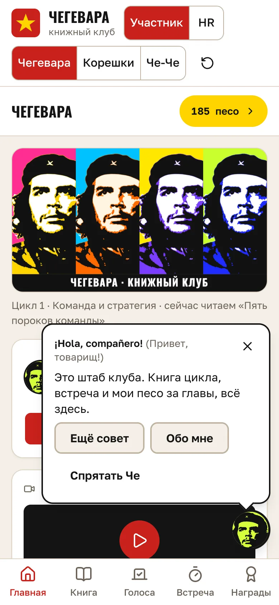
Подсказка по экрану
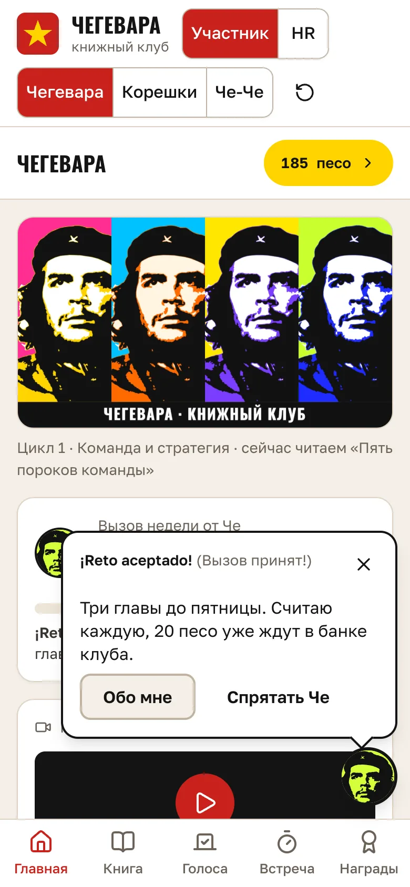
Задание недели и песо за главы
Пять строк, с которых начинается всё остальное.
Название
«Набор в книжный клуб». Платформа корпоративных книжных клубов: продаётся компаниям, внутри каждой компании живёт свой клуб со своим именем и своим характером.
Наш первый клуб называется «книжный клуб ЧЕ»: герой, голос и весь визуал построены вокруг Че как вечного читателя.
Что делает, одной фразой
Ведёт корпоративный книжный клуб вместо живого модератора: предлагает книги, собирает голосование, проводит встречу по таймеру, задаёт вопросы по прочитанному и отдаёт HR отчёт о вовлечённости.
Кто им пользуется, кроме меня
Как я пойму, что он работает
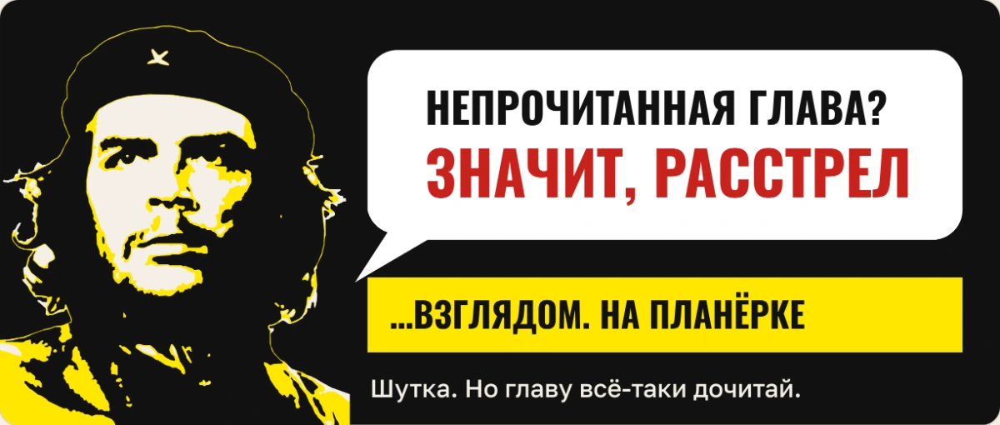
Какую задачу снимает и сколько времени она отнимает сейчас
Сейчас клуб держится на человеке. На одну встречу уходит около 5 часов: подготовка сценария и вопросов 3 часа, ведение 1,5 часа, сбор итогов и напоминания полчаса. Цикл из 3 встреч занимает примерно 16 часов на один клуб.
Это и есть потолок: вести так десять клубов в десяти компаниях одновременно невозможно, а продавать нужно именно столько. Платформа убирает из этих 16 часов всё, кроме живого разговора участников.
Блок 2. Рабочее место под проект, собранное так, чтобы дальше ничего не переделывать.
Рабочее место: что поставил и настроил
VS Code с расширением Claude Code, модель Opus. Папка проекта
~/Desktop/Catalyst-BookClub, под ней прототип на Vite, React и Tailwind,
макеты, ресёрч и спека.
Сверху два своих ограничителя, которые срабатывают сами: проверка интерфейса перед показом любого экрана и чек-лист правок, который переживает переезд в новый чат.
Права агента: что можно без спроса и что нельзя никогда
Без спроса: читать проект, править прототип, макеты и спеку, собирать и гонять прогоны, поднимать локальный сервер, делать коммит, спрашивать свежую документацию.
Запрещено совсем: git push, выкладка на зарубежный хостинг, чтение
секретов, rm -rf, команды к базе, прямые запросы к Telegram.
Спрашивает каждый раз: публикация страницы наружу, вход на сервер, копирование файлов на сервер.
Правила проекта: красные линии, которые не нарушает ни одна правка
Рядом с каждым запретом лежит строка «почему»: через месяц правило без причины снимают первым.
Свой скилл: сценарий встречи клуба
vstrecha-kluba собирает сценарий встречи. На входе книга, главы, число
участников и длительность. На выходе сценарий ведущему и экран встречи с живым таймером.
Это шаг, который повторяется больше всего: встреча идёт у каждого клуба каждый месяц. Скилл считает раскладку кодом, а не выдумывает: пропорции методологии, сумма шагов ровно равна длительности, разбивка на пары и четвёрки, минимум 7 минут на тему, вопросы по рамкам без пересказа книги.
Субагент и внешние инструменты
knizhnyy-resyorcher собирает карточку книги для каталога: автор, год,
объём, время чтения, где читать легально, цена, риски. Возвращает карточку, весь поиск
оставляет у себя.
Свой publish-page.py выкладывает макет страницей для пересылки партнёру.
Context7 даёт свежую документацию перед правкой кода: именно из устаревшего знания
о React родился баг первой итерации.
Улика: прогон скилла на встрече №1
$ python3 .claude/skills/vstrecha-kluba/tools/stsenariy.py \
--kniga "Кради как художник" --avtor "Остин Клеон" \
--glavy "1-5" --uchastnikov 12 --minut 90 --nomer 1
Встреча №1, книга «Кради как художник», главы 1-5
Шагов 5, сумма минут 90 (задано 90)
Lean Coffee: 7 тем по 7 минут
Участников 12: 6 пар, затем 3 четвёрок.
Готово: tmp/vstrecha-1/stsenariy.md
Готово: tmp/vstrecha-1/index.html
Блок 3. Одна поверхность, через которую один сценарий проходится целиком: участник в телефоне, HR в браузере.
1Вход по ссылке, два касания
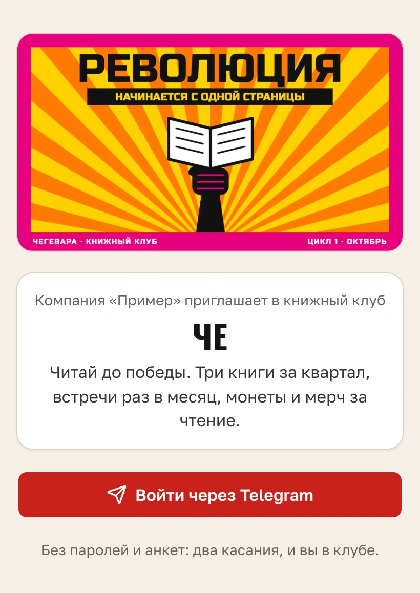
2Главная: книга, видео, подборка топа
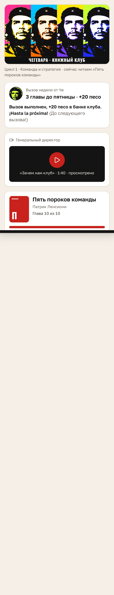
3Книга и прогресс чтения
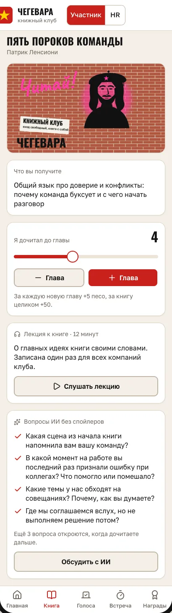
4Голосование за книгу цикла
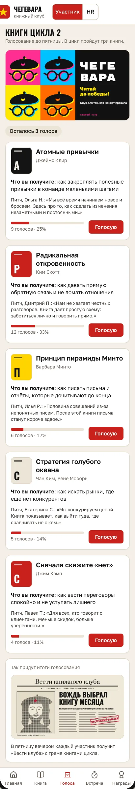
5Встреча идёт по таймеру сама
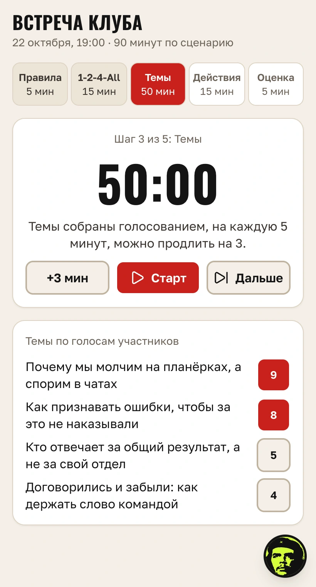
6Вопрос по прочитанным главам
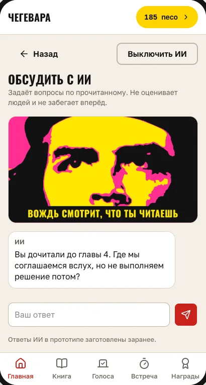
7Монеты, значки, рейтинг клуба
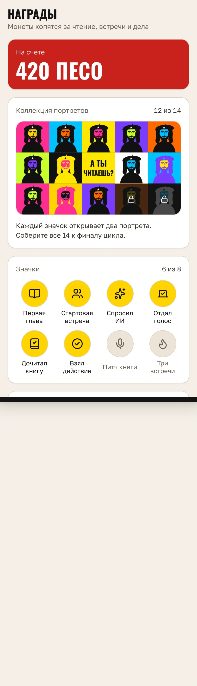
8Тот же клуб на маленьком телефоне
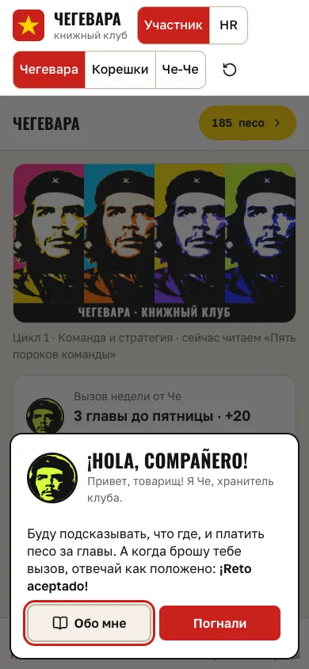
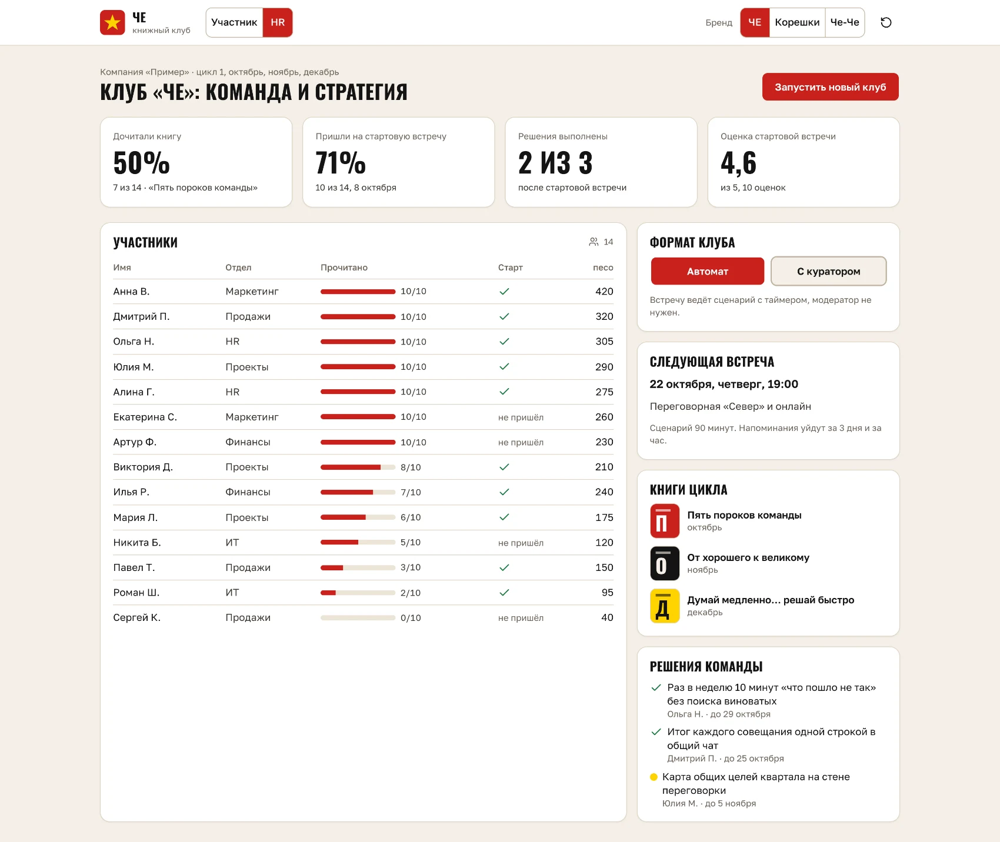
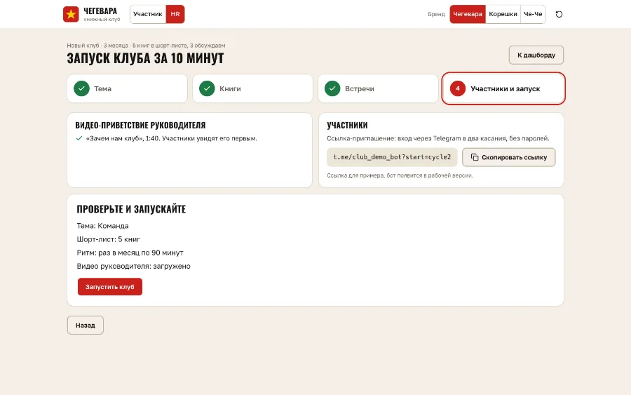
Сквозной сценарий участника
Открыл ссылку приглашения, попал в клуб. Увидел книгу цикла, приветствие руководителя и подборку топа. Отметил прогресс. Ответил на вопрос по прочитанным главам. Пришёл на встречу, где шаги идут по таймеру. Зафиксировал своё действие до следующей встречи. Получил монеты и значок, увидел себя в рейтинге клуба.
Бренды переключаются на лету: один и тот же экран показывает разные клубы, потому что платформа продаётся партнёрам под их логотипом.
Две итерации, как положено
Первая. Экраны при переходе прокручивались не туда, и только в свежем браузере. Корень: прокрутка срабатывала в эффекте React до того, как экран вставал на место. Починил не экран, а переход вообще, класс ошибки записал в общий трекер.
Вторая. Проверяющий агент нашёл две группы дефектов: монеты начислялись за повторное нажатие, а значки были прописаны руками и расходились с состоянием; на телефонах 390 и 360 пикселей нижние кнопки уезжали за край. Монеты и значки теперь считаются из состояния, оба размера экрана в прогоне.
Плакаты живут внутри приложения: шапка, приглашение, афиша встречи, экран голосования, награды. Это не украшение, а то, ради чего сотрудник открывает клуб во второй раз. Нарисованы кодом, поэтому новый плакат стоит минуту, а не вечер в редакторе.
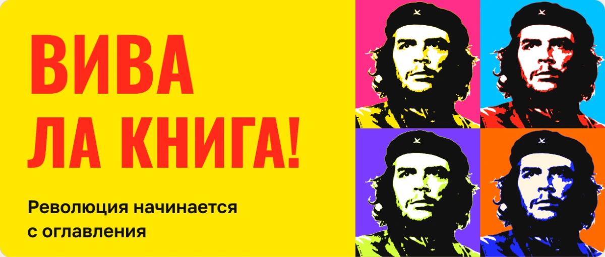
Вива ла книга
Шапка клуба, листается как лента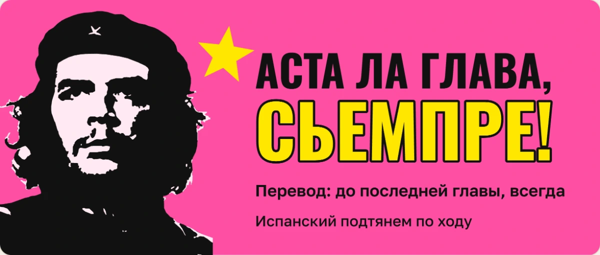
Аста ла глава, сьемпре
До последней главы, всегдаВождь всё сказал
Главу не отметил, значит не читал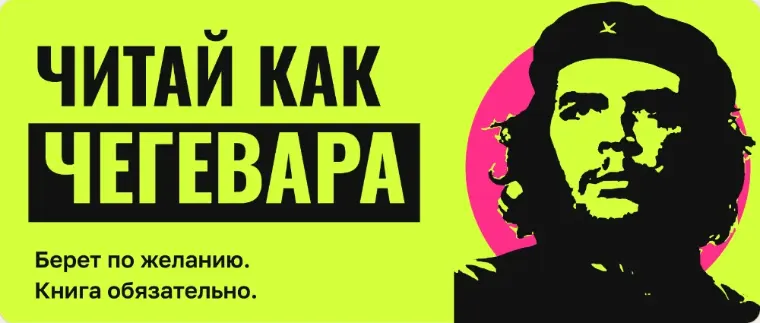
Читай как Чегевара
Берет по желанию. Книга обязательно.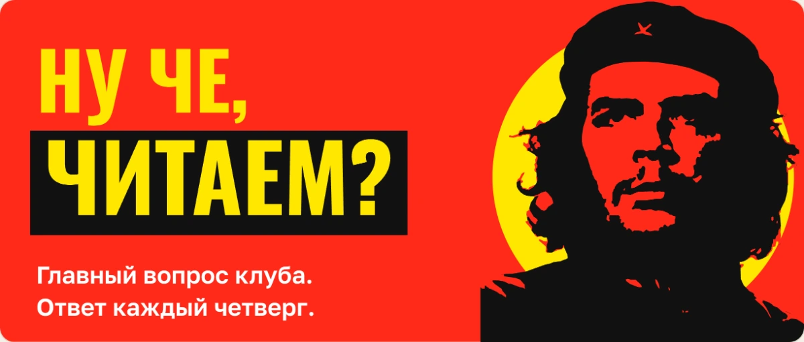
Ну че, читаем?
Вопрос, с которого начинается цикл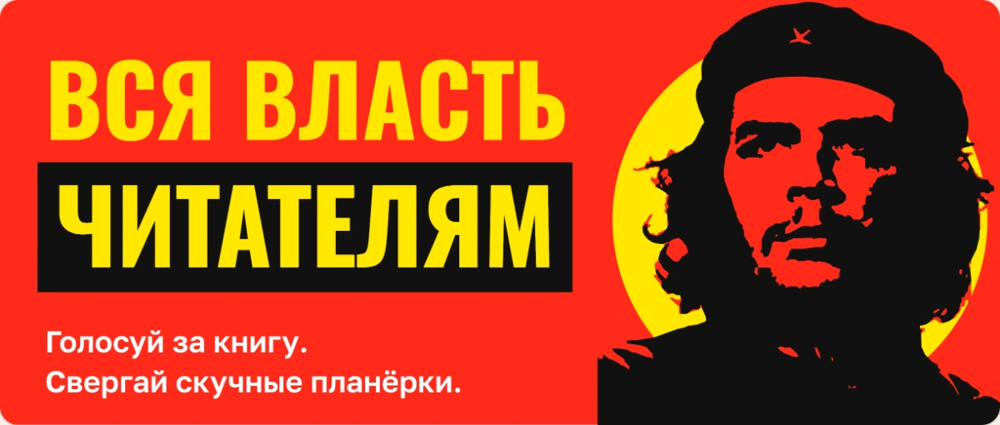
Вся власть читателям
Лозунг для экрана голосования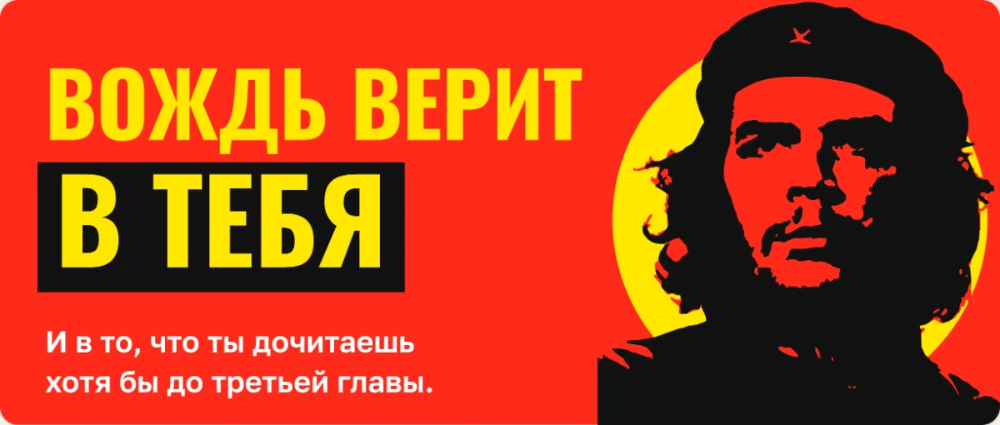
Вождь верит в тебя
Напоминание отстающим без укора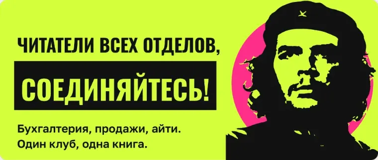
Читатели всех отделов
Про клуб между отделами компании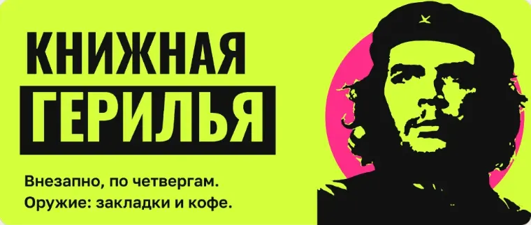
Книжная герилья
Для тех, кто читает в обед тайкомРаздел 3 · блок 4
Думающая часть: какое решение принимает агент, память, внешняя связь, где он ошибается.
заполняется позже
Раздел 4 · блок 5
Жизнь на сервере: провайдер, развёртывание, автоподъём, первые живые пользователи.
заполняется позже
Раздел 5 · блок 8
Прод и защита: репозиторий, логи, секреты, стоимость недели, презентация.
заполняется позже